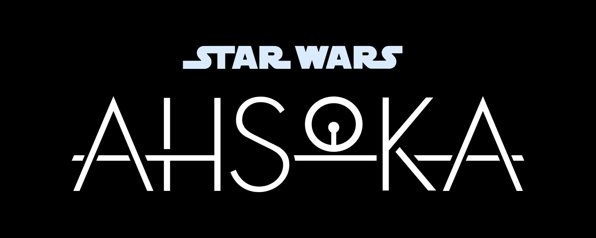
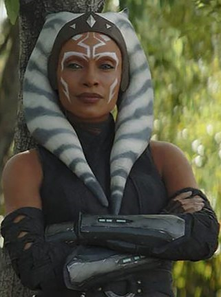

Ahsoka Tano, a Togruta female, was a Force-sensitive outcast from the Jedi order who, after the Clone Wars, helped establish a network of various rebel cells against the Galactic Empire. Tano was discovered on her homeworld of Shili by Jedi Master Plo Koon, who brought her to the Jedi Temple on Coruscant to receive Jedi training. Following the outbreak of the Clone Wars, Jedi Grand Master Yoda assigned the young Tano to be the Padawan learner of Jedi Knight Anakin Skywalker, who nicknamed her "Snips" when she joined him at the Battle of Christophsis. Whereas Tano was eager to prove herself, Skywalker had a reputation for recklessness, and they had a rather difficult start as master and apprentice. Yet they worked together to rescue Rotta, the son of crime lord Jabba Desilijic Tiure, and returned Rotta to his father, thus facilitating a crucial alliance between the Hutt Clan and the Galactic Republic.